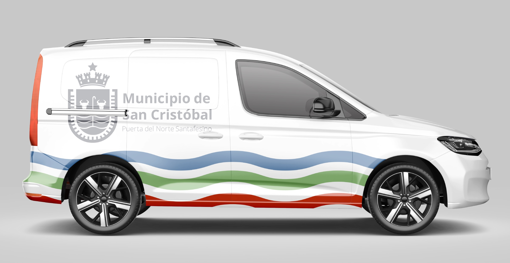
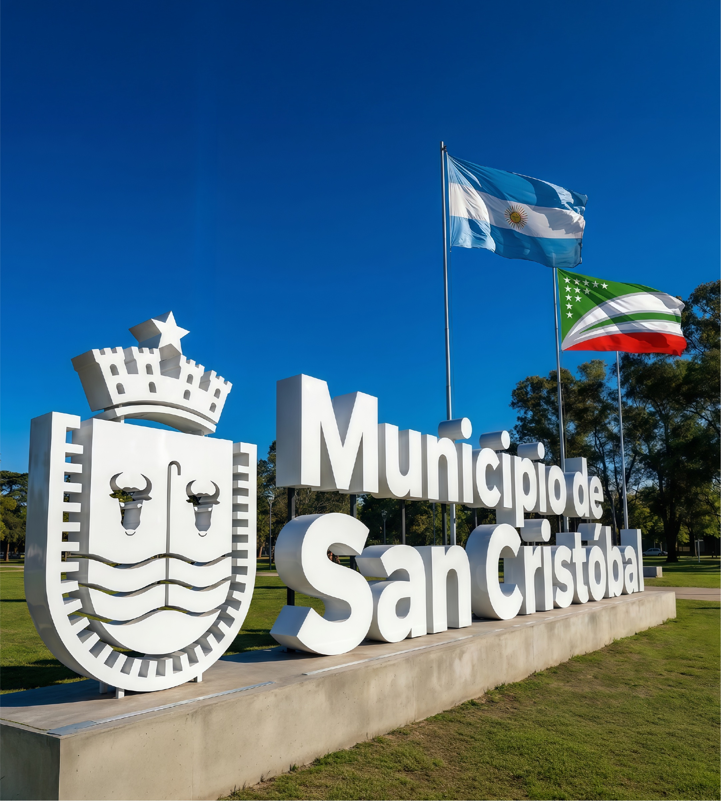

Municipio de
San Cristóbal
// PUERTA DEL NORTE SANTAFESINO
NUESTRO ENFOQUE
La identidad ciudadana requería una transición estratégica desde la heráldica tradicional hacia un sistema contemporáneo. Desarrollamos una marca ciudad dinámica que convive con la gestión municipal, profesionaliza la comunicación institucional y pone en valor la historia de la región.



